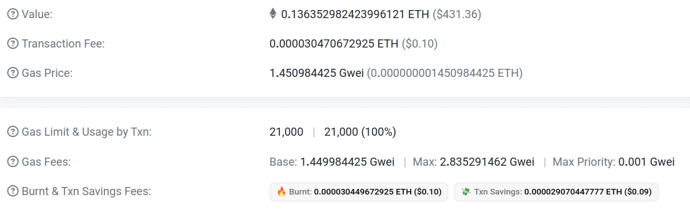
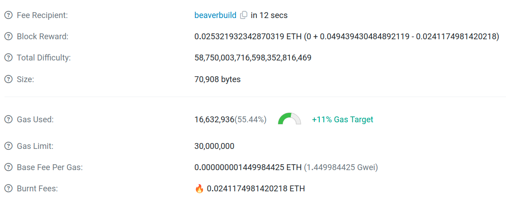

Useful links
Post-merge, independent stakeholders are
- Searchers
- Builders
- Decentralisation of the builder market talks about the difficulty of bootstrapping a builder, with access to private order flows and gaining market share being a chicken and egg problem. As of March 2024, builders need to subsidise their bids by around around 1.4 ETH to gain 1% market share for a week. The high barrier to entry leads to builder centralisation.
- Builder Dominance and Searcher Dependence talks about
- How SUAVE can address builder centralisation talks about
- Relay
- Proposers
Searchers
 Competitive sandwich searchers (speed is required) use leading zeros because it speeds it up, except for jared, who probably use some other tricks to be so fast.
Competitive sandwich searchers (speed is required) use leading zeros because it speeds it up, except for jared, who probably use some other tricks to be so fast.
Transaction Fees
Bolded terms are those you seen in etherscan. monospace terms are those in code.
Transaction:  Block: 
Every smart contract execution will consume some gas. Gas is a unit of computation, and it’s priced manually by humans (EF decides how much computational resources each opcode consumes). It is purely a function of your code execution, and nothing about bidding. A simple transfer takes 21k gas. When anyone (searcher or user) sends a tx, they can specify a gas limit/gas_limit. If the smart contract consumes more gas than the gas limit, it will revert. How much the tx actually uses is shown in etherscan as usage by txn. Gas usage is purely due to execution, nothing to do with bidding or consensus.
Now, you need to pay for the gas your tx consumed. And this gas price is the one that changes according to various consensus factors. Note gas price has units of eth/gas, or gwei/gas. This is displayed as gas price in etherscan. The total transaction fee = gas price x usage by tx.
How is gas price calculated? After EIP1559, when users send tx, they send a gas fee (max priority)/max_priority_fee_per_gas, indicating how much they are willing to pay for priority gas fee (given to proposer). And they also send a gas fee (max)/max_fee_per_gas, indicating how much they are willing to pay for total gas fee. How much they are willing to pay for the gas fee (base) is intuitively = gas fee (max) - gas fee (max priority).
Base fee per gas is decided by network congestion (if previous block maxed out gas limit). Base fee per gas is for the entire block. If the gas used maxes out the gas limit for this block, the next block will see a 12.5% increase in base fee per gas.
The user’s base fee per gas x gas used is burned, as seen in etherscan as burnt fees.
Builders
Builders can steal MEV, but that would lead to loss of trust.
We get a chain where block production is still centralized, but block validation is trustless and highly decentralized, and specialized anti-censorship magic prevents the block producers from censoring. - Vitalik in https://vitalik.eth.limo/general/2021/12/06/endgame.html
vita blog talks about https://hackmd.io/@mastercow/MEVBlocker-rules refund https://arxiv.org/pdf/2305.19150 centralising effects
https://etherscan.io/tx/0x28ce4fff4b2ec5a0274cfa1f58132ecf0ea583681ededc6917c45aa3201c33fc why doesnt this have priority fee? because it’s not a finalised block, susceptible to reorgs
https://etherscan.io/tx/0xd0797a9141636f0d8ce4c196603a6b2aa94348e2b9ad1993239591228d39f84c stuck because too little gas price
Useful links
https://mevboost.pics/ nice diagram of order flows from builders ⇒ relays ⇒ validators https://payload.de/data/ bidding in real time
Reach out to me at @codfish1 :)